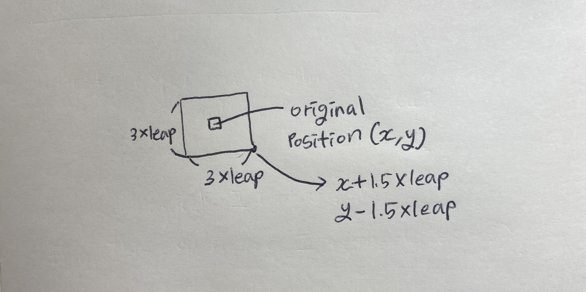
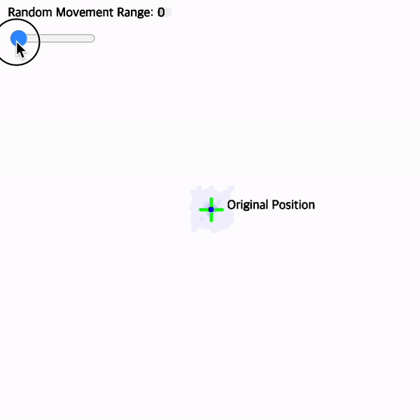
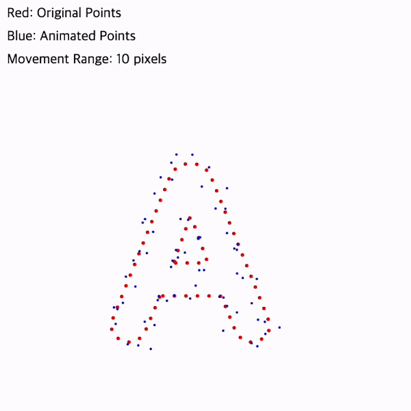

🌹 Ye₩(b.2001)
is a computational designer.
×

What happens when typography meets fluid dynamics?
This project creates an interactive typographic experience that simulates the behavior of ink diffusing in water, transforming static letters into dynamic, flowing forms.
This project creates an interactive typographic experience that simulates the behavior of ink diffusing in water, transforming static letters into dynamic, flowing forms.
Project Overview
This project allows users to input text and watch it transform as if it were ink spreading through water. The text is deconstructed into points that move and flow, creating an organic, fluid animation effect.
Key Features
The code art consists of three main features: a text input system with a 10-character limit, a slider control that adjusts point movement and diffusion effects, and a rendering system using gradient colors and transparency to create a fluid effect. These elements work together to transform static text into moving typography.
 Animation of the Effect
Animation of the Effect
Technical Approach
The project is built using p5.js(a JavaScript library for creative coding). p5.js is an amazing tool.
1. Text to Points
This function converts text into a series of points.
txt: the input text
200, 400: x and y coordinates
170: text size
sampleFactor: 0.2
*determines point density (lower = more points)
txt: the input text
200, 400: x and y coordinates
170: text size
sampleFactor: 0.2
*determines point density (lower = more points)
2. Point Movement Algorithm
The leap variable, controlled by a slider input, acts as our primary animation control parameter.
▪︎ Movement Range: The random(-leap, leap) calculation determines how far each point can move from its original position. This is multiplied by 1.5 to create more pronounced movement while maintaining control.
▪︎ Visual Weight: leap directly influences strokeWeight(), making points appear larger or smaller based on the animation intensity.
▪︎ Opacity Control: The opacity of each point is tied to leap * 3, creating a more diffused appearance as the animation intensity increases.
While the initial point positions are determined by the text shape, their movement is semi-random within controlled boundaries. This creates an organic, fluid effect while maintaining the overall readability of the text. The color and opacity calculations are tied to both the point index (i) and the leap value, creating a dynamic visual effect that responds to the animation intensity. As points move further from their original positions, their visual properties change, simulating the way ink diffuses in water.
▪︎ Movement Range: The random(-leap, leap) calculation determines how far each point can move from its original position. This is multiplied by 1.5 to create more pronounced movement while maintaining control.
▪︎ Visual Weight: leap directly influences strokeWeight(), making points appear larger or smaller based on the animation intensity.
▪︎ Opacity Control: The opacity of each point is tied to leap * 3, creating a more diffused appearance as the animation intensity increases.
While the initial point positions are determined by the text shape, their movement is semi-random within controlled boundaries. This creates an organic, fluid effect while maintaining the overall readability of the text. The color and opacity calculations are tied to both the point index (i) and the leap value, creating a dynamic visual effect that responds to the animation intensity. As points move further from their original positions, their visual properties change, simulating the way ink diffuses in water.

Make a rectangular boundary surrounding the origin

Control leap

Put animation into text